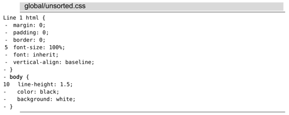
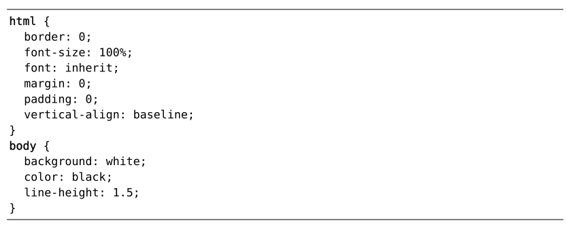

），就可以实现这一功能。
），就可以实现这一功能。技巧100将CSS文件中所有规则的属性按照字母排序
当Ex命令与:global一起组合使用时，我们也可以为[cmd]单独指定范围。Vim允许我们以:g/{pattern}为参考点，动态地设定范围。接下来，让我们看看如何利用这一点，将CSS文件中每一条规则的所有属性均按照字母顺序进行排列。
我们用以下 CSS 文件作为演示：

假设我们想把每一组规则内的属性都按照字母顺序排序。借助Vim的内置命令:sort（参见:h :sort），就可以实现这一功能。
对单条规则的属性进行排序
让我们先用:sort命令在该文件的子集上练练手（参见表15-1）。
首先，通过使用文本对象vi{，我们可以轻易地选中一段由{}所围的文本块。然后，再运行:'<,'>sort，便可以将这些文本行按照字母顺序重新排列了。如果每次仅对一条规则进行排序的话，此法完全可以胜任，但假设我们遇到的是一个包含数百条规则的样式表呢？如果能把这一过程自动化岂不更好么？
表15-1 对文件的子集进行排序
对所有规则的属性进行排序
其实，我们可以用一条:global命令对文件中所有规则的属性进行排序。假设我们在本例的样式表中运行以下命令：
➾:g/{/ .+1,/}/-1 sort
最终会得到以下结果：

这条排序命令会在每条规则的{}块内执行。尽管本例中的样式表仅仅包含十几行文本，但对于内容更多的CSS文件，此法也同样适用。
这条命令很复杂，但掌握其机理后，我们将会由衷地赞叹:global命令的强大。:global命令的标准格式如下所示：
请牢记，Ex命令通常都会接受“范围”作为其参数（正如技巧28所讨论的那样）。对于 :global命令内部的[cmd]，该规则依然有效。因此，我们可以将命令的模板扩展成以下形式：
实际上，我们可以用:g/{pattern}匹配作为参考点，动态设置[cmd] 的[range]。.符号通常表示光标所在行，但在:global命令的上下文中，它则表示{pattern}的匹配行。
我们可以把原有的命令拆分成两条单独的Ex命令进行讲解，先分析命令的后半部分。以下是一条有效的Ex命令：
➾:.+1,/}/-1 sort
如果我们去掉范围中的偏移，该范围可被简化为.,/}/，其含义是“从当前行开始，直到匹配到模式 /}/ 的那一行为止”。偏移值 +1 与—1仅仅用于缩小操作范围，让我们把目光集中在 {} 之间的内容上面。对于未排序的原始CSS文件，如果我们把光标置于第1行或第9行，以上这条Ex命令将会对相应 {} 之内的规则按照字母顺序重新排序。
也就是说，我们只需将光标置于每个{}块的起始位置，再运行:.,/}/ sort命令，即可将其中的规则按照字母顺序重新进行排序了。明白了么？现在，让我们试着用:global命令中的{pattern}执行一次查找：
➾/{/
以上命令会将光标置于某个 {} 块的起始位置，即我们的目标所在。现在，让我们再重新将:global与 Ex命令[cmd] 组合在一起：
➾:g/{/ .+1,/}/—1 sort
其中，模式 { 会匹配每个 {} 块的起始行。而对于每个匹配行，:sort会从匹配行到 {} 块的结尾这个 [range]范围内执行。最终，每一条规则的CSS属性都会按照字母顺序排列整齐了。
结论
:global命令的广义形式如下所示：
我们可以将其解读为“对从{start}开始，到{finish}结束的所有文本行，执行指定的[cmd]”。
对于:global命令与任意Ex命令的组合，我们都可以采用相同的范式。例如，假设我们想对某一段指定范围内的文本内容进行缩进，用Ex命令 :>（参见 :h >）就可以实现：
➾:g/{/ .+1,/}/—1 >
《 6 lines >ed 1 time
3 lines >ed 1 time
注意：与:sort不同的是，每当我们调用 :> 命令，Vim都会提示一条信息。如果我们在 [cmd]的前面加上:slient（参见:h :sil）的话，就可以屏蔽这些信息：
➾:g/{/sil .+1,/}/—1 >
此法尤其适用于:g/{pattern}匹配大量文本行的情况。
第六部分工具
“只做一件事，并做到极致”是Unix哲学的精髓所在。
Vim 提供了一些包装命令，让人们可以方便地调用诸如 make 或 grep 等外部程序。
有些编辑任务需要与编辑器更紧密地集成在一起，为此，Vim 提供了用于拼写检查及自动补全的原生工具和内置的 :vimgrep 命令。
在本书的这一部分，我们将研究Vim的工具箱及其与外部工具协同工作的接口。